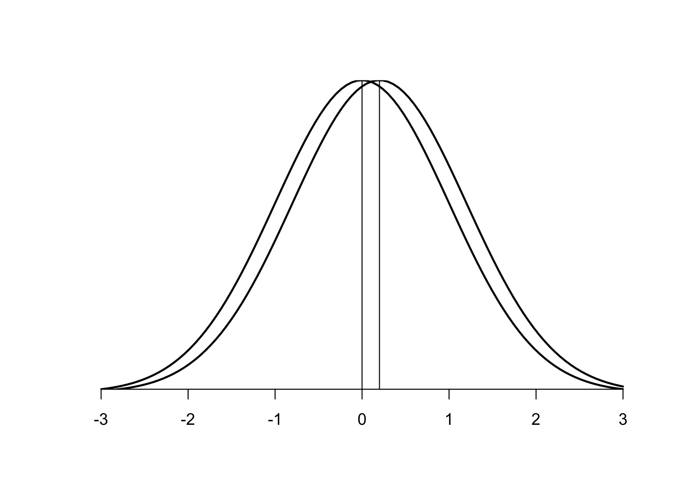

Chapter 7 統計的帰無仮説検定の問題
以下の4つの関係を理解し，統計的帰無仮説検定が抱える問題点について理解する。
* 有意水準
* 効果量
* 検定力
* サンプルサイズ
* 信頼区間
tidyverseとpwrパッケージをインストールして使う。
install.packages("pwr", "tidyverse")
library(pwr)
library(tidyverse)7.1 p値の問題
7.1.1 第Ⅰ種の過誤
第Ⅰ種の過誤（\(\alpha\)）とは，「帰無仮説が真なのに，帰無仮説を棄却する誤り」であった。第Ⅰ種の過誤を犯す確率は，有意水準として設定する確率である。
有意水準は一般的に5%が用いられる。第Ⅰ種の過誤を犯す確率を少なくするためにできるだけ小さい確率ということで，慣習として5%とされている（20回に1回くらいの誤りは許す）。
7.1.2 p値と標本数の関係
しかし，p値は標本数に依存する。標本数が多くなるほどp値は小さくなる。
例えばコイン投げて表が出る回数をカウントする実験を行う。10回コインを投げて2回表が出た場合，100回コインを投げて20回表が出た場合それぞれについて（表が出た割合はどちらも0.2），二項検定を行う。
「フェアなコインと比べてこのコインはゆがんでいるか」を検討する。
binom.test(x = 2, n = 10, p = 0.5, alternative = c("two.sided"))##
## Exact binomial test
##
## data: 2 and 10
## number of successes = 2, number of trials = 10, p-value = 0.1094
## alternative hypothesis: true probability of success is not equal to 0.5
## 95 percent confidence interval:
## 0.02521073 0.55609546
## sample estimates:
## probability of success
## 0.2binom.test(x = 20, n = 100, p = 0.5, alternative = c("two.sided"))##
## Exact binomial test
##
## data: 20 and 100
## number of successes = 20, number of trials = 100, p-value =
## 1.116e-09
## alternative hypothesis: true probability of success is not equal to 0.5
## 95 percent confidence interval:
## 0.1266556 0.2918427
## sample estimates:
## probability of success
## 0.2「有意ではない（\(p > 0.05\)）」というのは「差がない」ということを意味しない（差自体は存在する：今回の実験結果0.2とフェアなコインの結果0.5）。少ない標本数では，珍しい結果が生じることもありえる。意味のある差かどうかが，標本数が少なすぎて判断できないということである。
逆に，実質意味のない差であっても，標本数が多ければ統計的に有意な差（\(p < .05\)）は得られる。例えば，10,000回コインを投げて，表が出た回数が4,900回だった場合（表が出る割合は0.49），このコインがフェアなコインよりも歪んでいるかを検定してみると，有意（\(p < .05\)）な結果が得られる。
n = 10000
x = 0.49 * n
binom.test(x = x, n = n, p = 0.5, alternative = c("two.sided"))##
## Exact binomial test
##
## data: x and n
## number of successes = 4900, number of trials = 10000, p-value =
## 0.04659
## alternative hypothesis: true probability of success is not equal to 0.5
## 95 percent confidence interval:
## 0.4801563 0.4998496
## sample estimates:
## probability of success
## 0.49しかし，0.49と0.50の差，すなわち1%の違いを意味のある差と判断してよいのか？
7.1.3 p-hacking（＊）
方法次第で，「有意な結果」を導くことが可能。このようなインチキはpハッキングと表現されることがある。
* たくさんの質問項目について個別に検定を行い，有意な結果だけについて議論する。
* たくさん実験を行って，有意な結果だけを報告する。
* 被験者を少しずつ追加していく度に検定を行い，有意になったら追加するのをやめる。
有意な結果が得られた研究を報告している論文があった。その論文の研究を追試してみたところ，有意な効果は見られなかった。しかし，「追試のやりかたが悪かったからだ」などと批判され，既存の研究に対してネガティブなデータは公表されにくい。これは，出版バイアス（publiation bias）と呼ばれる。
7.2 効果量
上述のように，p値は「帰無仮説のもとで今回のデータ以上にまれな結果が得られる確率」を意味し，効果の大きさそのものを意味する指標ではない。有意だった（あるいは有意でなかった）からといって，差が大きい（ない）とは限らない。
効果の大きさを示す指標は，効果量（effect size）と呼ばれる。
7.2.1 Cohen’s d
ここでは，Cohenのd（Cohen’s d）と呼ばれる指標を紹介する。
Cohen’s dは，以下の式で計算される。nはそれぞれの群の標本数，\(\bar{X}\)はそれぞれの群の標本平均，\(S_{1}^2\)と\(S_{2}^2\)はそれぞれ2群の不偏分散とする。すなわち，\(S_{P}\)は2群をプールした上での標準偏差を意味する。
\[ \begin{equation} d = \frac{|\bar{X_{1}} - \bar{X_{2}|}}{S_{P}} \\ S_{P} = \sqrt{\frac{(n_{1}-1)S_{1}^2 + (n_{2}-1)S_{2}^2}{n_{1}+n_{2}}} \end{equation} \]
つまり，2群の標本平均の差が標準偏差の何倍大きいかを示す指標がdである。
7.2.1.1 例
60人の学生をそれぞれ2群に分け，学習課題を行わせた。課題の前に，実験群にはある訓練を，統制群には関係のない課題を行わせた。実験群と統制群の間で，学習課題の成績(Y)を比較する。
set.seed(1234)
#実験群：平均60，標準偏差20の正規分布から，30個サンプルする。
Exp = round(rnorm(n=30, mean = 60, sd = 20), 0)
#平均55，標準偏差20の正規分布から，30個サンプルする。
Cntr = round(rnorm(n=30, mean = 55, sd = 20), 0)
sample_data = data.frame(Y = c(Exp, Cntr), X = c(rep("Exp", 30), rep("Cntr", 30)))それぞれ，群別に平均値と標準偏差を見てみる。
dplyr::group_by(sample_data, X) %>% dplyr::summarise(mean = mean(Y), var = var(Y), sd = sd(Y), n = length(Y))## # A tibble: 2 x 5
## X mean var sd n
## <fct> <dbl> <dbl> <dbl> <int>
## 1 Cntr 44 367. 19.2 30
## 2 Exp 54.1 326. 18.0 30t検定で2群の平均値の差が統計的に有意かを検討する。
t.test(data=sample_data, Y~X, paired = F)##
## Welch Two Sample t-test
##
## data: Y by X
## t = -2.0947, df = 57.793, p-value = 0.0406
## alternative hypothesis: true difference in means is not equal to 0
## 95 percent confidence interval:
## -19.687396 -0.445937
## sample estimates:
## mean in group Cntr mean in group Exp
## 44.00000 54.06667効果量\(d\)を求める（上記の式に当てはまる数値を入れる）。
SP = sqrt(((30 - 1)*367 + (30 - 1)*326 ) / (30 + 30))
d = abs(44 - 54.1) / SP #abs()は絶対値を求める関数
d## [1] 0.5518631Cohen (1968)によると，効果量の評価は「小さい」，「中くらい」，「大きい」の目安がある。
だいたい，d = 0.2 が小さい，d = 0.5が中くらい，d = 0.8が大きい。
Cohen’s dは2つの標本の平均値の差の大きさを示す指標である。例えば，効果量0.2は以下のようになる。
curve(dnorm(x), lwd=2, xlim=c(-3,3),
xlab="", ylab="", frame.plot= FALSE, yaxt="n", yaxs="i")
curve(dnorm(x,mean=0.2), lwd=2, add=TRUE)
segments(0, 0, 0, dnorm(0))
segments(0.2, 0, 0.2, dnorm(0))
7.2.1.2 その他の効果量
Cohen’s d以外にも，効果量の指標が提案されている。詳しくは，大久保・岡田(2012)「伝えるための心理統計学」の第3章を参照。
7.3 検定力
7.3.1 第Ⅱ種の過誤
第Ⅱ種の過誤（\(\beta\)）とは，「帰無仮説が偽なのに，帰無仮説を採択してしまう」誤りのことであった。
検定力とは，正しい判断の確率，つまり「帰無仮説が偽であるときに，正しく帰無仮説を棄却する確率」であった。
* 検定力は\(1 - \beta\)で求められる（全体の確率から第２種の過誤を犯す確率を引いたもの）
検定力は有意水準（α=0.05）と違って特に基準が定まっているわけではないが，.80を水準として設定するのが良いとされている（5回に1回の誤りは許す:β=0.2）。
後述するように，統計的検定の検定力は標本数にも依存する。標本数が大きければ検定力は上がる（わずかな差でも”有意差”として検出してしまう）。標本数が少なければ検定力は下がる。
7.4 有意水準，効果量，検定力，標本数の関係
有意水準，効果量，検定力，標本数はそれぞれ関わり合っている。 * 標本数が増えれば有意な結果が出やすくなるというのは既に見たとおりである。 いたずらに標本数を増やせば意味のない差も検出されてしまう。無駄な労力にもなる。
これら4つのパラメータのうち，研究者が左右できるのは「標本数」だけである。
* 効果量は研究で明らかにしたいものそのもの。測定しなければわからない（事前に知ることはできない。先行研究からこれくらいだろうと予想することはできる）。
研究の前にあらかじめ「有意水準」，「効果量（の予想）」，「検定力」を決めておけば，取るべき標本数が定まる（事前の検定力分析）。また，データの取得後に，「有意水準」，「効果量」，「標本数」から，そのデータに対する「検定力」を調べることができる（事後の検定力分析）。
Rでは，pwrパッケージにある関数を用いて検定力の分析をすることができる。
#事前の検定力分析（標本数の設計）
#2群間の差をt検定で検定する場合
#各群の標本数(n)，効果量（d: Cohen's d），有意水準（sig.level），検定力（power）のどれか３つを入れると，入れなかったものの結果が出力される。
pwr::pwr.t.test(d=0.5, power=0.8, sig.level=0.05, n=NULL)##
## Two-sample t test power calculation
##
## n = 63.76561
## d = 0.5
## sig.level = 0.05
## power = 0.8
## alternative = two.sided
##
## NOTE: n is number in *each* group#事後の検定力分析
#２群それぞれの標本数(n1, n2)，効果量(d), 有意水準(sig.level)を入れると，検定力が求められる。
pwr::pwr.t2n.test(n1=10, n2=10, d=0.8, sig.level=0.05, power=NULL)##
## t test power calculation
##
## n1 = 10
## n2 = 10
## d = 0.8
## sig.level = 0.05
## power = 0.3950692
## alternative = two.sided7.5 信頼区間
95%信頼区間(95% confidence interval)は，95%の確率で母数が含まれる範囲のことを言う。
例えば，母集団からランダムに20個の標本を抽出し，平均を求める。
set.seed(1234)
sample_data2 = rnorm(n=20, mean=0, sd=1)
sample_data2## [1] -1.20706575 0.27742924 1.08444118 -2.34569770 0.42912469
## [6] 0.50605589 -0.57473996 -0.54663186 -0.56445200 -0.89003783
## [11] -0.47719270 -0.99838644 -0.77625389 0.06445882 0.95949406
## [16] -0.11028549 -0.51100951 -0.91119542 -0.83717168 2.41583518mean(sample_data2)## [1] -0.2506641平均は-0.25であった。この20個のデータから，母集団の平均を推定する。
- 標本から得られた値をもとに母集団のパラメータを評価する手続きは，推定と呼ばれる。
- もちろん，正確な母集団の平均値を当てることは難しい。そこで，母集団の平均値が入るだろうと予測される範囲を推定する。これが，信頼区間である。
7.5.1 信頼区間の求め方
例えば平均値の信頼区間は以下のように求める。
\[ CI = \bar{X} + ME\\ ME = SE \times \pm t_{95\%} \]
- MEは誤差範囲(margin of errors)である。つまり，標本から得られた値について正及び負の方向に誤差を加えた値が信頼区間の上限及び下限値となる。
- 誤差範囲には標準誤差（SE）を用いる。
データが正規分布に従うのならば，誤差範囲はt分布を使って求めるのが一般的。\(t_{95\%}\)は，t分布の95％点に対応する（t分布の下位または上位2.5%に対応するtの値）。
#conf.levelの値を変えれば，信頼区間の範囲を任意で設定できる（デフォルトで0.95）
t.test(sample_data2, conf.level = 0.95)##
## One Sample t-test
##
## data: sample_data2
## t = -1.1057, df = 19, p-value = 0.2826
## alternative hypothesis: true mean is not equal to 0
## 95 percent confidence interval:
## -0.7251406 0.2238125
## sample estimates:
## mean of x
## -0.2506641平均値の信頼区間ならば，Rではt.test()でも求めることができる。
7.5.2 信頼区間と統計的帰無仮説検定の関係
信頼区間は統計的帰無仮説検定と表裏一体である。
例えば「母集団の平均値は0ではない」という帰無仮説を評価する。すなわち，母集団の平均値の95％信頼区間にゼロが含まれていなければ，帰無仮説は棄却されることになる。
標本数を増やせば（標準）誤差が小さくなるので，信頼区間の範囲も狭くなる。
7.5.3 平均値以外の信頼区間の求め方（＊）
割合について求める場合は，Rならばbinom.test()で求められる。
#100人中，30人がある意見に賛成した場合。母集団の賛成率の信頼区間は？
#conf.levelの値を変えれば，信頼区間の範囲を任意で設定できる（デフォルトで0.95）
binom.test(x=30, n=100, conf.level = 0.95)##
## Exact binomial test
##
## data: 30 and 100
## number of successes = 30, number of trials = 100, p-value =
## 7.85e-05
## alternative hypothesis: true probability of success is not equal to 0.5
## 95 percent confidence interval:
## 0.2124064 0.3998147
## sample estimates:
## probability of success
## 0.3- もちろん，他の統計量についても，同じく信頼区間を評価することは可能。相関係数，回帰係数，効果量などについても求められる（詳しくは，大久保・岡田, 2012）。
- 信頼区間を評価することで，その推定値の正確さや範囲を評価することができる。
信頼区間を報告するときは一般的に，\(CI = [-0.56, 0.36]\)といったように表現する。
最近の心理学においても，信頼区間の報告が求められるようになっている。グラフのエラーバーの範囲にも信頼区間を載せることも多い（95%水準で有意差があるのかがわかりやすくなる）
練習問題
問１
- 二群間で平均値をt検定で比較する場合，効果量が小さい，中くらい，大きいとき（それぞれ，\(d=0.2, d=0.5, d=0.8\)），それぞれで一群あたり何名程度の参加者を取ればよいか？有意水準を0.05, 検定力を0.8とした上で求めよ。
- ヒント：Rのpwrパッケージの
pwr.t.test()を使えば求まる。
- ヒント：Rのpwrパッケージの
問２
小問1
以下のプログラムを読み込む。
あるサプリメントにダイエットの効果があるかを検討するために，10名を対象に実験を行った。それぞれの参加者にサプリメントを投与する前(before)と投与した後（after）で体重を測定した（架空のデータである）。
before = c(37.93, 52.77, 60.84, 26.54, 54.29, 55.06, 44.25, 44.53, 44.36, 41.1)
after = c(57.84, 50.02, 53.36, 65.97, 79.39, 63.35, 57.33, 51.33, 52.44, 101.24)
Value = c(before, after)
Treatment = c(rep("before", 10), rep("after", 10))
Subject = c(c(1:10), c(1:10))
sample_1 = data.frame(Subject = Subject, Treatment = Treatment, Value = Value)
sample_1## Subject Treatment Value
## 1 1 before 37.93
## 2 2 before 52.77
## 3 3 before 60.84
## 4 4 before 26.54
## 5 5 before 54.29
## 6 6 before 55.06
## 7 7 before 44.25
## 8 8 before 44.53
## 9 9 before 44.36
## 10 10 before 41.10
## 11 1 after 57.84
## 12 2 after 50.02
## 13 3 after 53.36
## 14 4 after 65.97
## 15 5 after 79.39
## 16 6 after 63.35
## 17 7 after 57.33
## 18 8 after 51.33
## 19 9 after 52.44
## 20 10 after 101.24- 対応のあるt検定で投与前と投与後の体重の比較をし，帰無仮説が棄却されるかについて結論を述べよ。
- ヒント：対応のあるt検定のやりかたについては，第６回の資料を参照。
小問２
以下のデータは，小問１のデータを横に並べ替えたものである。参加者１人につき１行，投与前（before）と投与後（after）も数値が入力されている。
sample_2 = data.frame(Subject = c(1:10), before = before, after = after)
sample_2## Subject before after
## 1 1 37.93 57.84
## 2 2 52.77 50.02
## 3 3 60.84 53.36
## 4 4 26.54 65.97
## 5 5 54.29 79.39
## 6 6 55.06 63.35
## 7 7 44.25 57.33
## 8 8 44.53 51.33
## 9 9 44.36 52.44
## 10 10 41.10 101.24- 投与前と投与後の体重の差を求めて，体重の差の95%信頼区間を求めよ。
- ヒント：投与前と投与後の差の変数を作る。つまり，beforeからafterを引き（逆でも可），diffという新しい変数を作る。新しく作った変数をt.test()に入れれば95%信頼区間が求まる。
参考文献
大久保街亜・岡田謙介 (2012). 伝えるための心理統計 勁草書房